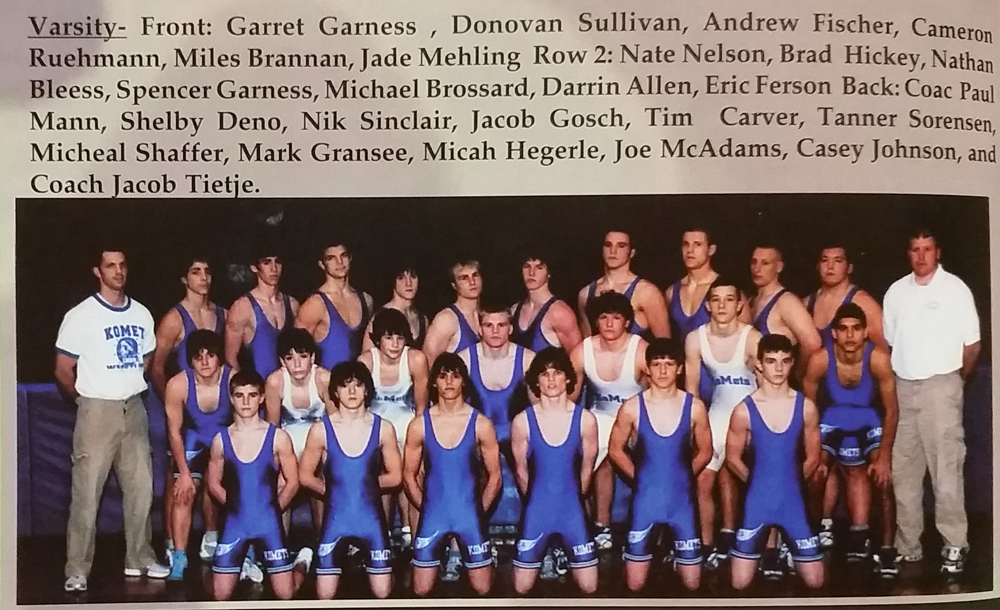

Season
2006-07
18-5Dual record
24Wrestlers
1State champions
Paul MannHead coach

Roster
| Wt | Wrestler | Grade | Record | State |
|---|---|---|---|---|
| Dec. | 14th GMLOK | W | 39-17 | |
| Dec. | 14th United South Central | W | 43-24 | |
| Jan. | 4th Stewartville | 41-19 | ||
| Jan. | 11th Zumbrota-Mazeppa | 36-20 | ||
| Jan. | 25th Lake City | W | 46-15 | |
| Feb. | 6th Kenyon-Wanamingo | W | 49-21 | |
| Feb. | 8th Triton | W | 72-6 | |
| Feb. | 10th Lake City | W | 47-10 | |
| Feb. | 12th Cannon Falls | W | 39-21 | |
| Feb. | 12th Caledonia | W | 38-18 | |
| 103# | Garret Garness State champ | 8 | 37-4 | 1st at state |
| 112# | Donovan Sullivan | 9 | 24-16 | Section 5th |
| 119# | Miles Brannan | 9 | 11-16 | SE at state |
| 125# | Cameron Ruehmann | 9 | 16-22 | Section 5th |
| 130# | Jade Mehling | 11 | 17-12 | |
| 135# | Spencer Garness | 12 | 36-4 | Section 3rd |
| 140# | Shelby Deno | 10 | 17-21 | Section 4th |
| 145# | Nate Nelson | 12 | 13-26 | Section 4th |
| 152# | Jake Gosch | 12 | 38-8 | SE at state |
| 160# | Tim Carver | 11 | 13-15 | Section 5th |
| 171# | Tanner Sorensen | 11 | 25-12 | Section 5th |
| 189# | Mark Gransee | 12 | 34-7 | SE at state |
| 215# | Joe McAdams | 12 | 6-6 | |
| 285# | Casey Johnson | 9 | 26-15 |
Team Results
18-5 · Click to expand
- Dec.Columbia HeightsW55-22
- Dec.Spring Lake ParkW54-17
- Dec.HayfieldW43-18
- Dec. 14thGMLOKW39-17
- Dec. 14thUnited South CentralW43-24
- Archbishop Moller, OHL44-15
- Wrightstown, Wi.W40-25
- Valentine, NE.W47-21
- Lodi, Wi.W40-31
- SimleyL31-34
- Kaukauna, Wi.L27-30
- Jan. 25thLake CityW46-15
- ByronW43-25
- Rochester MayoW38-24
- Dover-EyotaW48-12
- Feb. 6thKenyon-WanamingoW49-21
- Feb. 8thTritonW72-6
- Feb. 10thLake CityW47-10
- Feb. 12thCannon FallsW39-21
- Feb. 12thCaledoniaW38-18
- Big LakeW31-30
- St. Michael-AlbertvilleL24-30
- Adrian AreaL23-27
Head coachPaul Mann
AssistantKevin Berge
AssistantRyan Hill